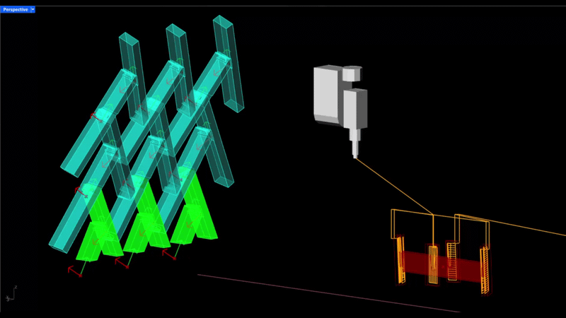
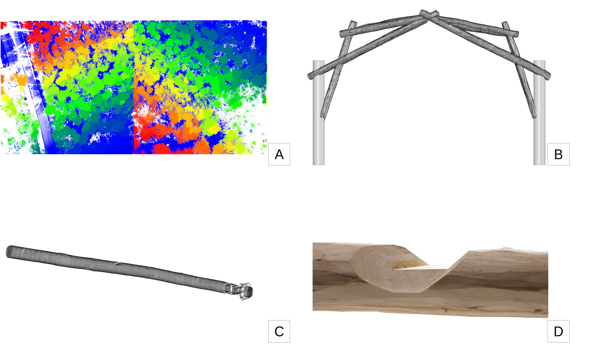

conference: DiffCheck 2.0: Design-Integrated Scan-to-CAD Evaluation for Incremental Fabrication Workflows, 2026, Gilliard, D; Skevaki, E, Parascho, S; Weinand, Y

non-isi journal: Ressourcenschonender Holzbau: vier Wege zur effizienteren Materialnutzung, 2026, Esser, L; Gilliard, D; Stucki, S; Ramawat, S B R; Brumaud, C

conference: DiffCheck: A scan-CAD evaluation tool for digital manufacturing and assembly processes in timber construction, 2025, Settimi, A; Gilliard, D; Skevaki, E; Kladeftira, M; Gamerro, J; Parascho, S; Weinand, Y.

conference: Design method for roundwood construction usingDiffCheck 2.0: ... database of trees, 2025, Gilliard, D; Weinand, Y.